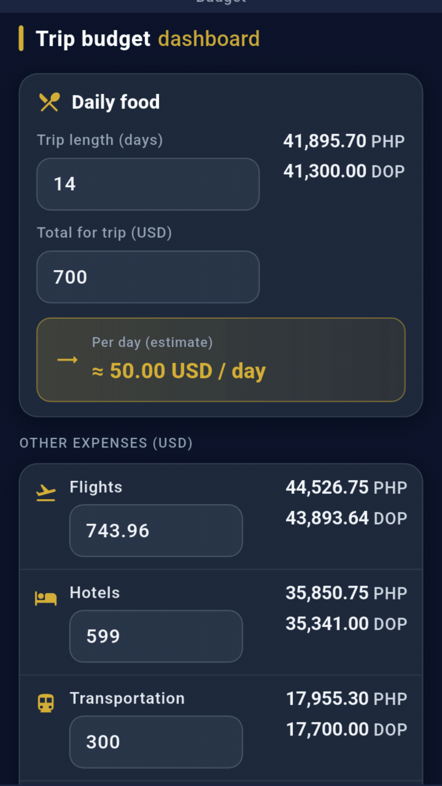
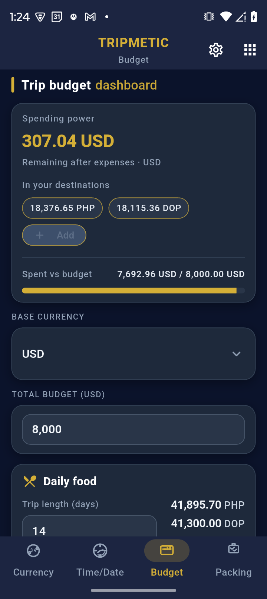
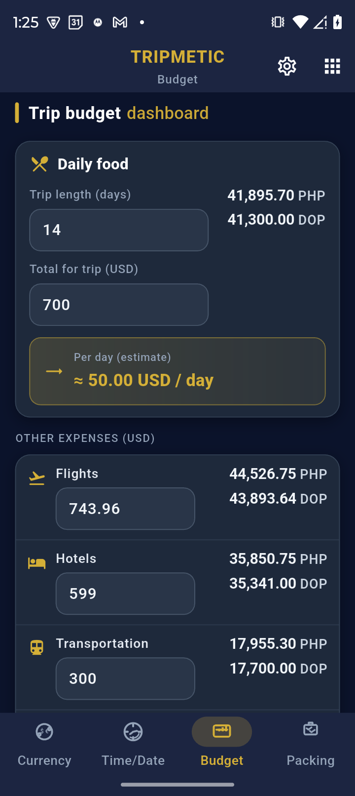
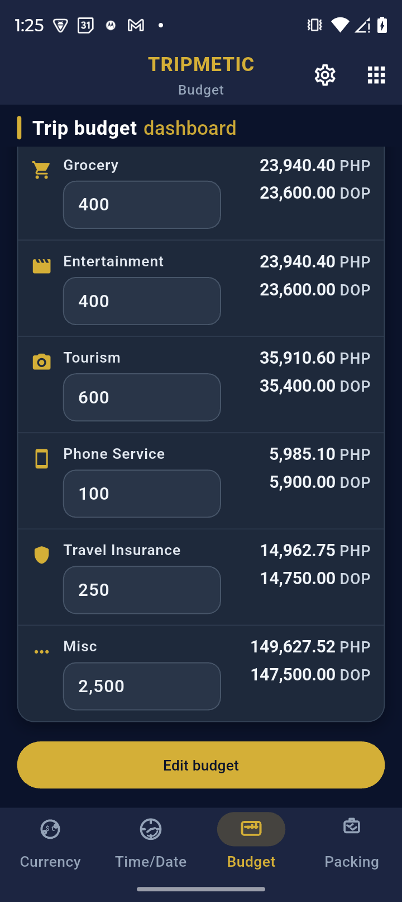

Most travel budget apps force you to create a separate file every time you cross a border. The Tripmetic Multi-Country Budget engine was designed to treat your capital logically: you have one single pool of money, and you spend it in different currencies.
By eliminating manual currency math, Tripmetic allows you to see your exact daily burn rate and your remaining spending power instantly. Here is how to take control of your finances.
1 Establish Your Base Capital
Navigate to the Budget tab. Start by setting your "Home Currency" (e.g., USD, EUR, or GBP) and entering your total trip budget. Think of this as the master bank account for your journey. Everything you spend, regardless of the country, will be deducted from this core number.

2 Log Foreign Expenses
When you buy a coffee in Tokyo or pay for a taxi in Manila, simply tap the "+" button to add an expense. Select the local currency you paid in (e.g., JPY or PHP), type the amount, and assign it to a category (Food, Transit, Lodging, etc.).
Tripmetic immediately pulls the live market exchange rate, converts that foreign expense into your Base Currency, and deducts it from your total budget.

3 Understand Your "Spending Power"
This is the most powerful tool in the Tripmetic dashboard. Your app will show you that you have, for example, $1,200 USD remaining. But what does that actually buy you right now?
The Spending Power display automatically takes your remaining Base Budget and translates it into the local currency of the country you are currently standing in. Instead of doing mental math, you instantly know exactly how many Pesos, Baht, or Yen you have left to spend.

4 Review Your Financial Breakdown
As your trip progresses, use the analytical breakdown charts within the Budget tab to view your spending by category. Because all foreign expenses are normalized against your Base Currency, you can accurately compare what you spent on food in Vietnam versus what you spent on food in Thailand.

Frequently Asked Questions
Tripmetic operates with a robust offline-first architecture. When you lose service, the app relies on the last known exchange rates securely cached in your device's memory. Once you reconnect to Wi-Fi or mobile data, the app silently pings the server and updates all calculations with live market rates.
No. Tripmetic is a strict privacy-first application. We do not use Plaid or require any bank logins. You are acting as your own financial controller, manually logging expenses to maintain absolute privacy over your financial data.
To prevent data fragmentation and keep the UX streamlined, the app focuses on one active "Master Budget" at a time. We recommend clearing and restarting your budget when beginning an entirely new, distinct international journey.